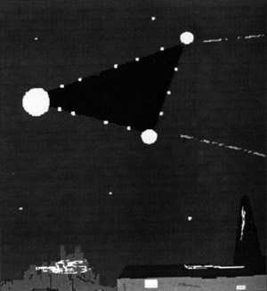

Représentation de l'ovni observé le 26 à 21:30

À Villiers-Bocage (Somme), 4 témoins dans leur véhicule observent
1 point lumineux orange vif plus gros qu'une étoile et se déplaçant comme un avion en se rapprochant. L'observation
a duré 2 à 3 mn durant lesquelles l'objet change brusquement de forme pour devenir un losange très allongé ou une
forme de cigare. Aucun bruit n'est perçu SEPRA: PAN classé C.
À Bourgneuf-en-Retz
(Loire-Atlantique), de
nombreux témoins témoignent de l'observation de nombreux points lumineux formant une forme indéfinie et tournant
dans le ciel. L'enquête montrera qu'il s'agit vraisemblablement de projecteurs d'une discothèque voisine SEPRA: PAN classé B.
Dans le cadre des manifestations de la fête nationale mexicaine, un défilé d'hélicoptères
est organisé au-dessus de la capitale, Mexico. Un objet mystérieux sort alors des nuages, en arrière-plan du défilé
aérien, volant la vedette aux pilotes (photo ci-contre). L'événement s'était déjà déroulé les 2 années précédentes.
Lancement de Spot 3 par Ariane.
Au-dessus de Bakewell (Derbyshire), observation par de nombreux
témoins de l'ovni représenté ci-contre. Il fait plusieurs manœuvres à basse altitude et est dépassé par un
camion roulant à 60 km/h.
A Piana (Corse), 1 témoin observe pendant un bref
instant une
lumière intense de forme allongée qui passe à grande vitesse et sans bruit SEPRA: PAN classé C.